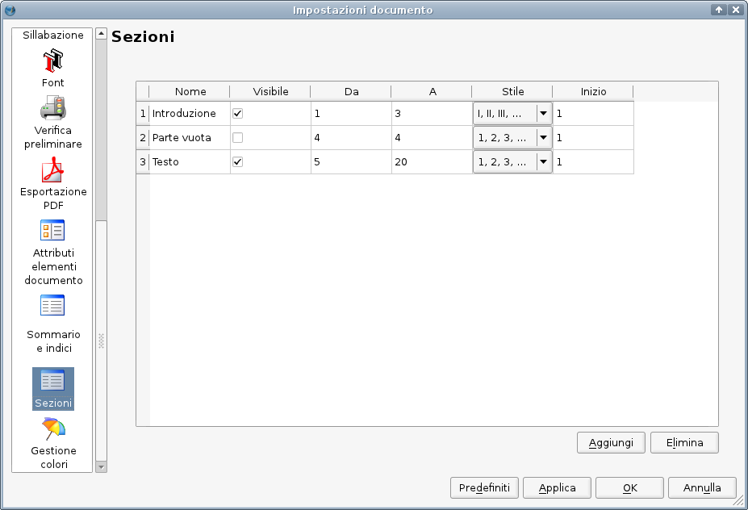

In Scribus, l'inserimento di numeri di pagina che vengono incrementati automaticamente non è così facile come, ad esempio, in un elaboratore di testo, ma quando avrete imparato come farlo, vedrete che è semplice e affidabile. Inoltre, quando è necessario usare diversi schemi di numerazione nello stesso documento (come “I, II, III” per l'introduzione, “1, 2, 3” per il testo principale e “A, B, C” per l'appendice), è anche più facile rispetto a un elaboratore di testo.
Come già sapete, quasi ogni cosa in Scribus si fa in una cornice, e i numeri di pagina non fanno eccezione. Quindi, per inserire un numero di pagina dobbiamo innanzitutto creare una cornice di testo in cui inserirlo. Dopo essere passati alla modalità modifica per la cornice di testo, possiamo inserire una variabile che rappresenta il numero di pagina, e Scribus la sostituirà con l'effettivo numero della pagina. Vi sono due modi diversi di inserire questa variabile: il primo è l'uso della combinazione di tasti Ctrl+Alt+Maiusc+P. Se trovate questa combinazione troppo scomoda potete cambiarla in Preferenze > Tasti di scelta rapida. Il secondo modo di inserire la variabile è il comando Inserisci > Carattere > Numero di pagina dalla barra dei menù.
Vedrete che Scribus visualizza il numero di pagina, ma in questo modo potreste non aver ottenuto ciò che volevate, poiché il numero è stato inserito soltanto nella pagina corrente. Se volete automatizzare l'inserimento dei numeri di pagina, dovete inserire la variabile in una cornice di testo collocata in una pagina mastro. Noterete che su una pagina mastro il numero di pagina non è visualizzato, poiché essa non è una “vera” pagina e quindi non ha una posizione nella successione delle pagine del documento. Al suo posto, Scribus visualizza il simbolo #.
Lo schema di numerazione può essere cambiato in File > Impostazioni documento. In Sezioni potete creare delle sezioni di documento, ciascuna delle quali avrà una diversa numerazione:
|  |
Supponiamo che abbiate un'introduzione che occupa le prime tre pagine, e volete che siano numerate in numeri romani. Il testo principale inizia alla quinta pagina, che dovrà avere il numero 1. Per motivi estetici, la quarta pagina non dovrà avere un numero. La prima sezione è già presente, e se volete potete darle un nome inserendolo nell'apposita colonna. Nella colonna “Da” inserite “1” e nella colonna “A” inserite “3”; scegliete “I, II, III” come stile di numerazione e impostare il valore “Inizio” a “1”.
Per aggiungere una nuova sezione, premete il pulsante “Aggiungi” in basso nella finestra di dialogo. Per la quarta pagina del nostro esempio i valori devono essere: “Da” = 4, “A” = 4, “Stile” e “Inizio” non hanno importanza in questo caso, ma dovete disabilitare l'opzione “Visibile” nella seconda colonna: in questo modo sulla quarta pagina non comparirà il numero di pagina. Per il testo principale i valori sono: “Da” = 5, “A” = [il numero totale delle pagine necessarie per il testo principale], “Stile” = 1, 2, 3, e “Inizio” = 1. Questo è tutto: il documento avrà la numerazione desiderata.